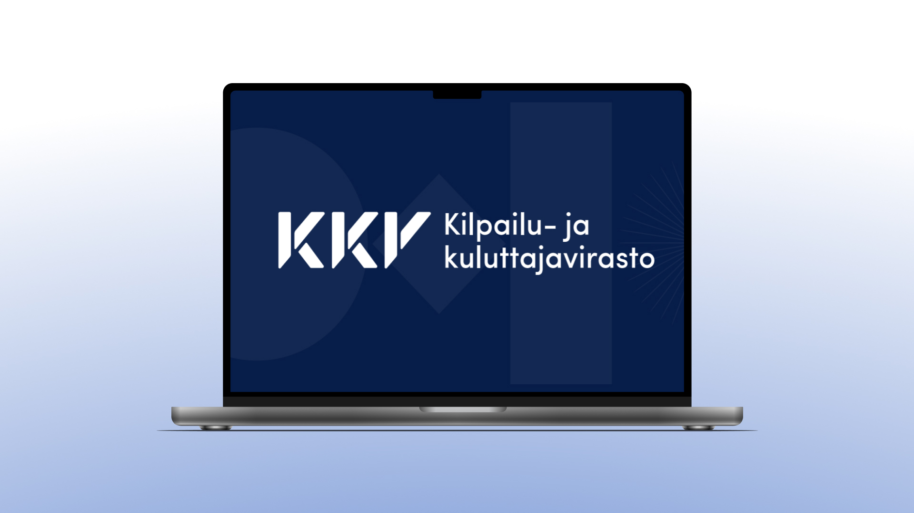
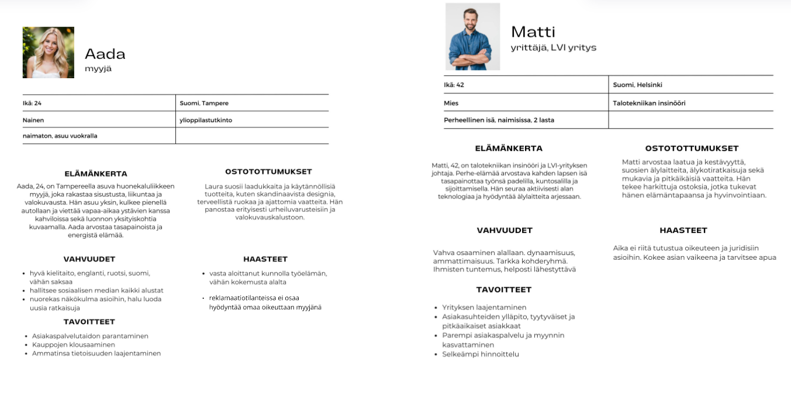
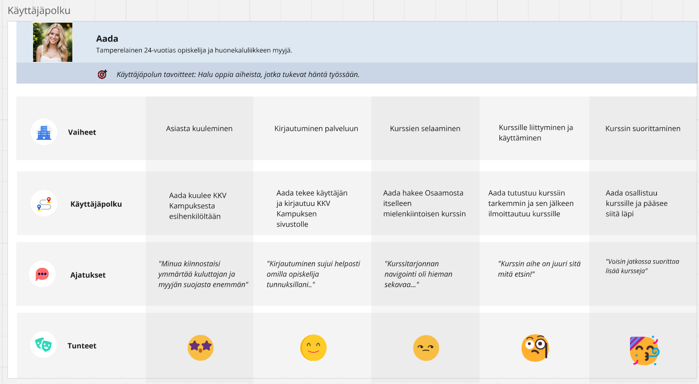
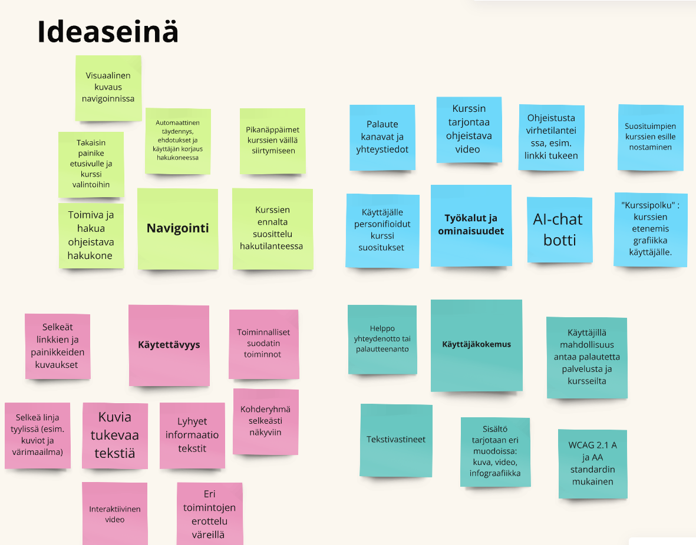

KKV Kampus
Osallistuimme viiden hengen ryhmänä koulumme järjestämään Design Sprint -viikkoon, jonka toimeksiantajana toimi Kilpailu- ja kuluttajavirasto (KKV). Tavoitteena oli parantaa KKV Kampuksen käytettävyyttä. Kampus on oppimisalusta, joka tarjoaa kursseja ja materiaaleja opettajille, opiskelijoille ja yrittäjille. Viikon aikana keskityimme KKV Kampus Osaamoon, joka on erityisesti opiskelijoille suunnattu osa alustan sisällöstä.
Käyttäjäpersoonat & käyttäjäpolku
Luoimme käyttäjäpersoonat, jotka tukivat valitsemaamme käyttäjäryhmää. Näistä persoonista rakensimme käyttäjäpolun, jossa havainnollistimme käyttäjän kokemaa prosessia. Itse vastasin erityisesti käyttäjäpolun luomisesta.
 Käyttäjätestaus
Hyödynsimme käyttäjätestausta selvittääksemme, kuinka intuitiivinen KKV Kampuksen prototyyppi oli ja miten hyvin sivun navigaatio toimi. Suunnittelimme testitehtävät perustuen havaitsemiimme haasteisiin ja tarkkailimme, miten uusi käyttäjä kokee sivuston. Tulokset vastasivat pitkälti odotuksiamme, mutta saimme myös arvokkaita uusia parannusehdotuksia. Tässä testauksen runko.
ideaseinä
Testauksen jälkeen arvioimme käytettävyyttä itsearviointitaulukon avulla. Kävimme läpi kertyneen datan ja kokosimme keskeiset havainnot Miro-ideaseinälle, josta valitsimme tärkeimmät kehityskohteet prototyypin parantamiseen.
Prototyyppi
Visualisoimme keskeiset parannusehdotukset meidän omaan Figma-prototyyppiin. Kuten chat-botin lisääminen, footerin parantelu sekä sivuston navigaation alasvetovalikon näyttämään aina millä sivulla on sillä hetkellä.
Voit käydä kurkkaamassa protoa!
KKV prototyyppi